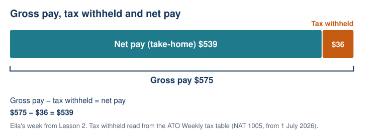
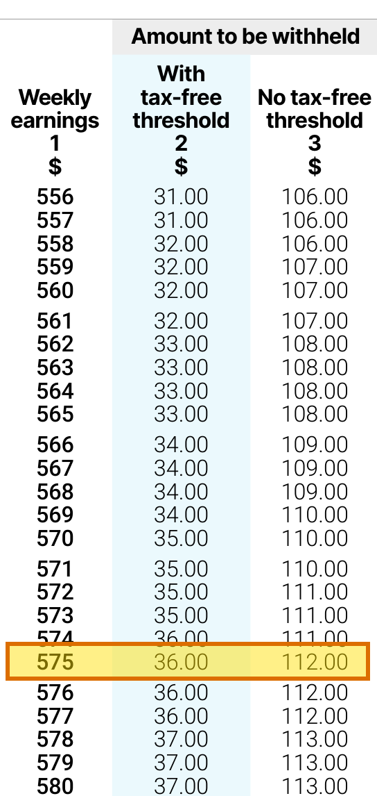

Lesson 3: From Gross Pay to Take-Home Pay
Year level: Year 10 (middle ability set)Duration: 60 minutesFocal concept/topic: Earning money: pay periods, leave loading, PAYG tax and net pay | |
Lesson aim: Convert pay between weekly, fortnightly, monthly and yearly amounts, calculate leave loading, and use the ATO weekly tax table to find take-home pay, so that students can answer Lesson 1's question "Which job pays the most?" | |
Learning intention: We are learning to convert pay between time periods, calculate leave loading, and use the ATO tax table to work out net pay. Success criteria: □ I can convert pay between weekly, fortnightly, monthly and yearly amounts using 1 year = 52 weeks, and explain why monthly pay is not 4 × weekly pay | |
Syllabus outcomes and content: NSW Mathematics K–10 Syllabus (NESA, 2022)
| Working Mathematically indicators:
|
ICT:
| LIT:
|
Prerequisite knowledge:
| Resources:
|
Before the lesson:
| |
Labels used in this plan: WM Working Mathematically LIT Literacy ICT Technology AfL Assessment for learning AoL Assessment of learning
Key teacher question → Expected: suggested student response. Self-designed WM indicators are in italics.
Teaching sequence
| Steps & timing | Teaching & learning activities |
|---|---|
| ORIENTATION0–8 minStarter: back to the job ads |
Teacher
Students
|
| ENHANCING8–20 minConverting pay periods |
Teacher
Model: office assistant, $58,500 p.a.
Model: barista, $25 per hour, working 38 hours a week
Students
|
| ENHANCING20–28 minAnnual leave and leave loading |
Teacher
Model: Priya is a full-time retail worker covered by the General Retail Industry Award. Her normal pay is $1,000 per week, and she works weekdays only. She takes 4 weeks of annual leave.
Students
Teacher note: Clause 28.3 pays whichever is greater, a 17.5% loading or the penalty rates the worker would have earned for those ordinary hours. Priya works weekdays only, so the 17.5% applies. |
| ENHANCING28–43 minPAYG tax and the ATO tax table |
Teacher
Model: office assistant, gross $1,125 per week
Students
Teacher note: Column 2 stays at $0.00 a little past $350. On this table the first dollar of tax in column 2 is withheld at $365. If students notice, explain that the table is built from ATO formulas, and the exact tax for the year is worked out later in a tax return. |
| ENHANCING43–52 minPutting it together |
Teacher
Task: Sam works weekday shifts only and earns a salary of $46,800 per year. He has claimed the tax-free threshold. (a) What is Sam's gross weekly pay? (b) Use the tax table to find his tax withheld and net weekly pay. (c) Sam's award pays 17.5% leave loading. How much is he paid in total for 4 weeks of annual leave? Extension: Using 1 year = 52 weeks, how many weeks long is an average month? Use your answer to explain why "monthly pay = 4 × weekly pay" always gives too little. Students
|
| SYNTHESIZING52–60 minAnswering the unit question, and exit ticket |
Teacher
Exit ticket (a) Lucas earns $41,600 per year. What is his gross weekly pay? (b) Use the tax table (tax-free threshold claimed) to find his net weekly pay. (c) Tim says Lucas's monthly pay is 4 × his weekly pay. Write one sentence explaining why this is wrong. Success criteria: tick the ones you can now do. For any you cannot tick, write the step that is still unclear. After the lesson
|
Worked solutions
| Task / question | Worked solution |
|---|---|
| Starter 1 | 0.05 × $6,000 = $300. $400 + $300 = $700 |
| Starter 2 | $25 × 1.5 = $37.50 per hour. $37.50 × 4 = $150 |
| Starter 3 | Cannot answer yet. The hourly and yearly amounts need the barista's hours and a common time period. |
| Office assistant | Weekly $58,500 ÷ 52 = $1,125. Fortnightly $1,125 × 2 = $2,250. Monthly $58,500 ÷ 12 = $4,875 |
| Maria's error | 4 × $1,125 = $4,500, which is $375 less than $4,875 |
| Barista (38 h) | $25 × 38 = $950 per week. $950 × 52 = $49,400 per year |
| We do (Jess) | Yearly $700 × 52 = $36,400. Monthly $36,400 ÷ 12 = $3,033.33 |
| Priya's leave | $1,000 × 4 = $4,000. 0.175 × $4,000 = $700 loading. Total $4,700 |
| Tax-free threshold per week | $18,200 ÷ 52 = $350. Table, $350: column 2 $0.00, column 3 $62.00 |
| Office assistant tax | Table, column 2, $1,125: $178. Net $1,125 − $178 = $947 |
| We do (Ella) | Table, $575: $36. Net $575 − $36 = $539 |
| Q1 (Jess) | $700: $65. Net $635 |
| Q2 (Mia) | $576: $36, the same as Ella's $575. Net $540. The extra $1 does not change the tax, because in this part of the table the tax only goes up by $1 every few dollars of pay |
| Q3 (Priya) | $1,000: $138. Net $862 |
| Q4 | $600: column 2 $42, column 3 $120. Column 3 withholds $78 more |
| Putting it together (a) | $46,800 ÷ 52 = $900 |
| Putting it together (b) | Table, $900: $106. Net $900 − $106 = $794 |
| Putting it together (c) | 4 weeks of normal pay: $900 × 4 = $3,600. Loading: 0.175 × $3,600 = $630. Total $4,230 |
| Extension | 52 ÷ 12 ≈ 4.33 weeks. A month is longer than 4 weeks, so 4 × weekly pay leaves out about a third of a week's pay each month. |
| Closure | Office assistant $1,125 gross, $947 net (table $178). Barista $950 gross, $828 net (table $122). |
| Exit ticket (a) | $41,600 ÷ 52 = $800 |
| Exit ticket (b) | Table, $800: $83. Net $800 − $83 = $717 |
| Exit ticket (c) | A month is about 4.33 weeks, not 4, because a year has 52 weeks but 12 months. So 4 × weekly pay is too small. |
All tax amounts are read from the ATO Weekly tax table NAT 1005, which applies to payments made from 1 July 2026 (Australian Taxation Office, 2026a).
Adjustments and anticipated misconceptions
| Misconception | Why students think this | How this lesson addresses it |
|---|---|---|
| A month is 4 weeks, so monthly pay = 4 × weekly pay | Calendars are often drawn as 4 rows of weeks. | Key question on Maria's error. Extension: 52 ÷ 12 ≈ 4.33. Exit ticket (c). |
| Net pay is more than gross pay, or tax is added | "Gross" and "net" are new words with no clue to their meaning in everyday English. | The gross–net diagram. The prompt "Should net pay be more or less than gross pay?". |
| Tax withheld from one week is the tax for the year | The table gives one number and students read it as "the tax". | Key question "Is $178 the tax for the whole year?". Preview of Lesson 3b. |
| The tax-free threshold means the whole pay is tax-free, or it is a form of tax | The phrase is abstract and long. | Explained with one number ($18,200 a year = $350 a week), then seen in the table at $350 (column 2 $0, column 3 $62). |
| Leave loading is worked out on one week's pay | Students are used to weekly amounts from Lessons 1 and 2. | Key question "one week or the whole leave period?". |
| Every worker gets annual leave and leave loading | Students' own part-time jobs are usually casual, and the rule is not obvious. | Key question about Ella as a casual worker, using the Fair Work Ombudsman wording. |
| Students who need… | Adjustment |
|---|---|
| more support | A ruler or strip of paper to read across one row of the tax table. The worksheet starts with Ella's line worked out in full (Net pay = $575 − $36 = $539), then gives "Net pay = ____ − ____" for each question. |
| more challenge | The extension (weeks in a month) and the full Sam problem. |
| language support (EAL/D) | The pay words list stays on the board with the gross–net diagram. Table headings are read aloud and put into everyday words. |
Vocabulary
| Term | Definition | Image |
|---|---|---|
| gross pay | Pay before any tax is taken out | Diagram below |
| net pay (take-home pay) | Pay left after tax and other deductions are taken out | Diagram below |
| per annum (p.a.) | Per year | |
| fortnight | Two weeks | |
| PAYG withholding | Pay As You Go: the employer takes some tax out of each pay and sends it to the ATO | |
| tax withheld | The amount of tax taken out of one pay | Table extract below |
| tax-free threshold | For most Australian residents, the first $18,200 of yearly income, on which no income tax is paid. Claiming it means less tax is taken out of each pay | |
| annual leave | Paid time off work. Full-time and part-time employees get 4 weeks a year, but casual employees do not | |
| leave loading | An extra payment during annual leave, worked out as a percentage of normal pay (17.5% in the General Retail Industry Award) |


Image credits:
- Tax table: extract from Australian Taxation Office (2026a), NAT 1005, with the $575 row highlighted. The ATO allows its material to be copied and adapted.
- annual leave: "Sun loungers" by Ed.ward, CC BY-SA 2.0. https://www.flickr.com/photos/44423341@N00/5478649673
Sources acknowledged in this lesson
- Australian Taxation Office. (2026a). Pay as you go (PAYG) withholding: Weekly tax table (NAT 1005). Applies to payments made from 1 July 2026. https://www.ato.gov.au
- Australian Taxation Office. (2026b). How to claim the tax-free threshold. https://www.ato.gov.au/individuals-and-families/jobs-and-employment-types/tax-free-threshold/how-to-claim-the-tax-free-threshold
- Fair Work Commission. (2026). General Retail Industry Award 2020 [MA000004], cl. 28. https://awards.fairwork.gov.au/MA000004.html
- Fair Work Ombudsman. (2026). Annual leave. https://www.fairwork.gov.au/leave/annual-leave
- NSW Education Standards Authority. (2022). Mathematics K–10 syllabus: Stage 5, Financial mathematics A. https://curriculum.nsw.edu.au/learning-areas/mathematics/mathematics-k-10-2022/content/stage-5/facb3aa952
- Names and figures other than the ATO and Fair Work figures are made up for classroom use.
Further lessons page: Lesson 3b (outline only)
Lesson 3b: Taxable income. Students work out annual taxable income by subtracting allowable deductions from yearly income. They use the ATO resident tax rates for 2026–27 to find the tax payable for the year, then compare it with the PAYG tax withheld across the year from Lesson 3 to see why a tax return can lead to a refund or a bill.